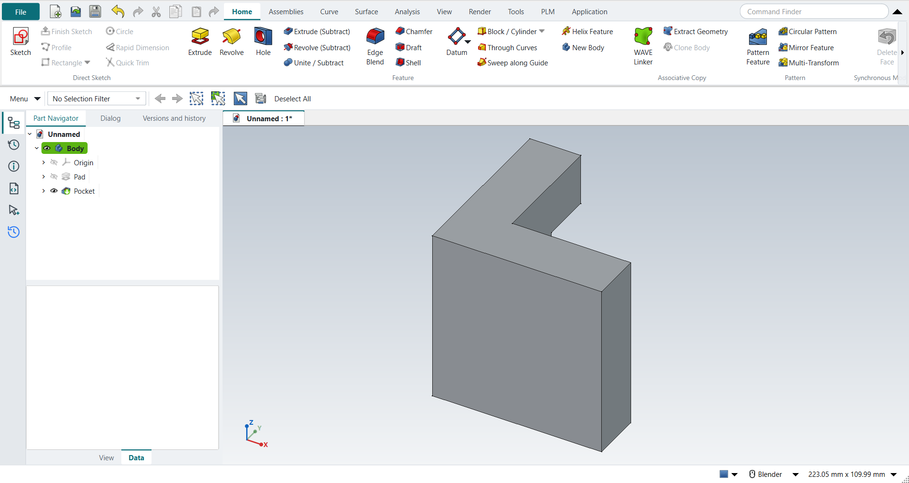

Tutorial A: The Adjuster
| Book |
Shih, Parametric Modeling with Siemens NX, ch. 2 |
| You learn |
New part, Extrude from a sketch, Profile, Rapid Dimension, Extrude (Subtract) |
| Sizes |
A 63.5 × 63.5 mm L outline with 19.05 mm legs, extruded 63.5 mm; a 25.4 mm wide, 19.05 mm deep slot (the book’s 2.5, 0.75 and 1.00 in) |

In short
-
Ctrl+N, then X with nothing selected; pick XY_Plane, MB2.
-
Z (Profile): six MB1 clicks for the L, MB2 to end it.
-
D: the widths, heights and leg thicknesses.
-
Ctrl+Q: the Extrude dialog opens; 63.5 mm, MB2.
-
Select the top face, Home › Feature › Extrude (Subtract); R, two clicks, MB2; dimension the slot; Ctrl+Q; 19.05 mm, MB2.
The step list came from the book’s chapter by way of NotebookLM; its slot placement was ambiguous, so the slot is cut into the top of the vertical leg and the part stays one solid.
Step by step
| # | In the book (NX) | In FreeCAD NX-Style | Result | Notes |
|---|---|---|---|---|
A1 |
File > New (Ctrl+N), Model template |
Ctrl+N |
same |
new document ['Unnamed'] with a Body; its datum planes appear when a plane is picked (kept hidden otherwise: FreeCAD 1.1.4 hides the part when they stay on) |
A2 |
Units in the New dialog (the book picks inches) |
metric part kept; book sizes typed in mm |
differs |
FreeCAD sets units in Preferences, not in the New dialog; NXStyle defaults to millimetres (document: Standard (mm, kg, s, °); 25.4 mm shows as 25.40 mm) |
A3 |
Extrude (X) with nothing selected |
X key |
same |
FreeCAD asks for the sketch plane in the Dialog panel; NX asks in the graphics window |
A4 |
Pick the XY plane, accept with MB2 |
plane row in the Dialog panel + MB2 click |
same |
picked XY-plane (Base plane); sketch in edit: Sketch |
A5 |
Profile (Z), six MB1 clicks for the L outline |
Z key + MB1 clicks in the graphics window |
same |
tool active True; 6 curves drawn |
A6 |
MB2 ends Profile |
MB2 click |
same |
tool ended = True |
A7 |
Rapid Dimension (D): 2.5 width, 2.5 height, 0.75 legs |
D key, values applied |
differs |
D starts FreeCAD’s Dimension tool. FreeCAD does not show NX’s dynamic dimensions on click, and there is no 'scale the whole sketch to the first dimension?' prompt |
A8 |
Finish Sketch (Ctrl+Q) returns to the Extrude dialog |
Ctrl+Q |
same |
Extrude dialog open = True; modals [] |
A9 |
Extrude: End = Value 2.5, Boolean None, OK |
typed into 'lengthEdit', MB2 = OK |
same |
volume 130584.4 mm^3, expected 130584.4 |
A10 |
Extrude, pick the top face as sketch plane, Boolean Subtract |
select face + ribbon 'Home › Feature > Extrude (Subtract)' |
differs |
FreeCAD has no Boolean option in Extrude: the subtracting extrude is its own button (Home > Feature > Extrude (Subtract)) |
A11 |
Rectangle ®, two MB1 clicks, MB2 |
R key + MB1 clicks + MB2 |
same |
tool active True; 4 curves |
A12 |
Rapid Dimension: 0.50 from edge, 1.00 wide, 0.75 deep |
values applied |
differs |
as in step 6: same tool, no NX dynamic dimensions |
A13 |
Finish Sketch returns to the (subtract) Extrude dialog |
Ctrl+Q |
same |
dialog open = True |
A14 |
Reverse Direction into the solid |
- |
differs |
not needed: FreeCAD’s subtracting extrude cuts into the solid by default |
A15 |
Slot depth 0.75, OK |
'lengthEdit' = 19.05 mm, MB2 = OK |
same |
volume 121366.7 mm^3, expected 121366.7; 1 solid(s) |
A16 |
The finished part is shown in the graphics window |
render of the graphics window |
same |
26.7% of the view shows the part |
A17 |
Save (Ctrl+S) |
Ctrl+S is bound to Save (tested by the self-test); file saved |
same |
saved as Adjuster.FCStd (FreeCAD format, not .prt) |
A18 |
Reopened part is shown |
render of the graphics window |
same |
26.7% of the view shows the part |
| Result | Means |
|---|---|
same |
The book’s NX steps work as written. |
differs |
It works, but the FreeCAD way is different; the notes say how. |
limit |
The book’s way fails in FreeCAD itself; a workaround follows in the next steps. |
missing |
FreeCAD has no such function; a stand-in follows. |
skipped |
Not replayed; the notes give the reason. |
FAILED |
Did not work. |